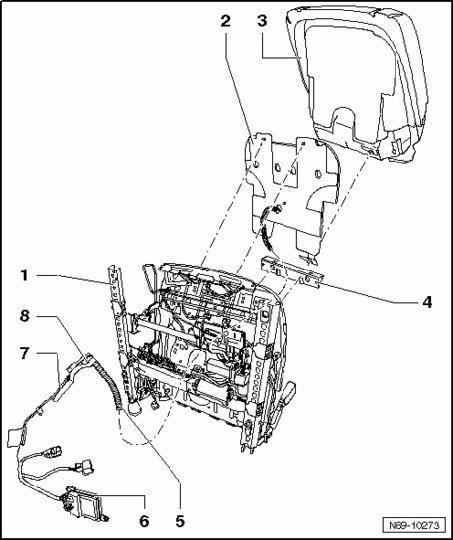

Passenger Occupant Detection System (PODS) (USA Only), Assembly Overview
Passenger Occupant Detection System (PODS) (USA Only), Assembly Overview

1 - Seat frame
2 - Seat Occupied Recognition Mat
3 - Upholstery of front seat cushion
4 - Insertion profile
- Note location
5 - Pressure hose
6 - Seat Occupied Recognition Control Module J706
7 - Front seat wiring harness
8 - Seat Occupied Recognition Pressure Sensor G452